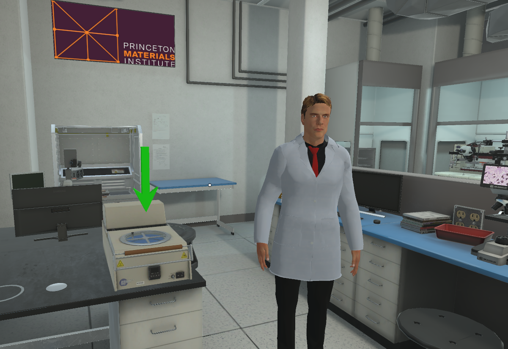
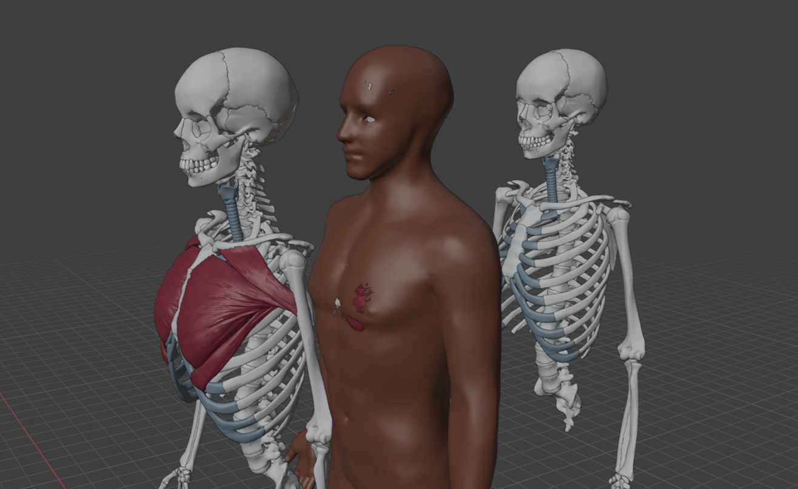

Explore projects across AI, systems, robotics, and more. Filter and dive in.

Digital Twin Powered by AI
Technologies: Blender, Hyperskill, C#, Unity
Developed an immersive digital simulation depicting the chip packaging process in collaboration with Princeton University. Designed as training material for device packaging technicians and enthusiasts in VR.
Users can explore all steps of the process in VR. The simulation includes interactive models, immersive 3D visualization, and detailed explanations of each packaging stage.
This Research Project focused on a cost-effective bridge between Machine Learning and Robotics.
By training in Procedurally Generated Virtual Simulation Environments tasked with interacting and completing tasks on Procedurally Generated Articulating Objects, we were able to collect more consistent real-time data. This trained data is used for enforcing exact policies in real-world robotics. This approach not only accelerates the development process but also reduces costs by minimizing risks to physical robots and expensive appliances. Ultimately, the research seeks to lower entry barriers between machine learning and robotics.
The CSAI website is an interactive and user-friendly platform built using HTML, CSS, and JavaScript, designed to showcase the club’s activities, projects, and resources.
It features a clean and modern layout, intuitive navigation, and dynamic content that highlights ongoing initiatives, upcoming events, and member contributions.
Through interactive elements and responsive design, the website provides a seamless experience for visitors, encouraging engagement with the club and fostering a community passionate about computer science and artificial intelligence.

AnatomyVR
Technologies: Blender, Unity
This project is a virtual 3D simulation platform focused on human muscles, designed for anatomy and physical therapy students.
It provides detailed, interactive 3D models that allow students to explore, identify, and understand the structure and function of each muscle.
By engaging with the simulation, students can visualize muscle groups, learn their roles in movement, and practice applying this knowledge in a virtual setting, enhancing their learning experience beyond traditional textbooks and lectures.
This platform combines technology and education to offer a hands-on, immersive, and accessible way to master muscular anatomy and its applications in physical therapy.
This project aims to use DTAI&ML to create immersive and interactive 3D learning & training content for the photonics workforce.
Photonics, using light (photons) as opposed to electricity (electrons), is the latest wave of innovation, such as Silicon Photonics that combines optical components with electric circuits into one single chip, leveraging on semiconductor technology and manufacturing capabilities and experience.
Kyushu Institute of Technology (Kyutech) engages in origami engineering,
leveraging traditional Japanese paper-folding art for advanced applications, especially in space, creating deployable, compact structures like solar panels and habitation modules for satellites and lunar bases, focusing on self-deployment and large-scale structures from small volumes, a key area in aerospace design
This research, alongside Kyushu University, uses origami principles for creating complex 3D shapes, honeycomb cores, and efficient mechanisms for space exploration, aligning with Japan's strong cultural ties to origami.
An interactive robotic exhibit built on the open-source g-arm project, combining hands-on engineering education with public engagement at Maker Faire Philadelphia.
Using ROS 2 as the software backbone, students gain experience in robot modeling (URDF/Xacro), motion planning, control systems, and human-robot interaction through real-world development workflows.
Visitors can play tic-tac-toe against the robotic arm using an Adafruit keypad. The system detects player moves, computes strategy, and executes precise motion trajectories—demonstrating kinematics, path planning, and closed-loop control in an engaging format.
Project Goals:
Showcase student competencies in robotics, programming, and systems integration
Promote workforce-ready STEM education
Demonstrate open-source technology as a cost-effective learning pathway
Inspire K-12 and community participants to explore careers in robotics and engineering
 ercer Robotics (Work In Progress)
ercer Robotics (Work In Progress)